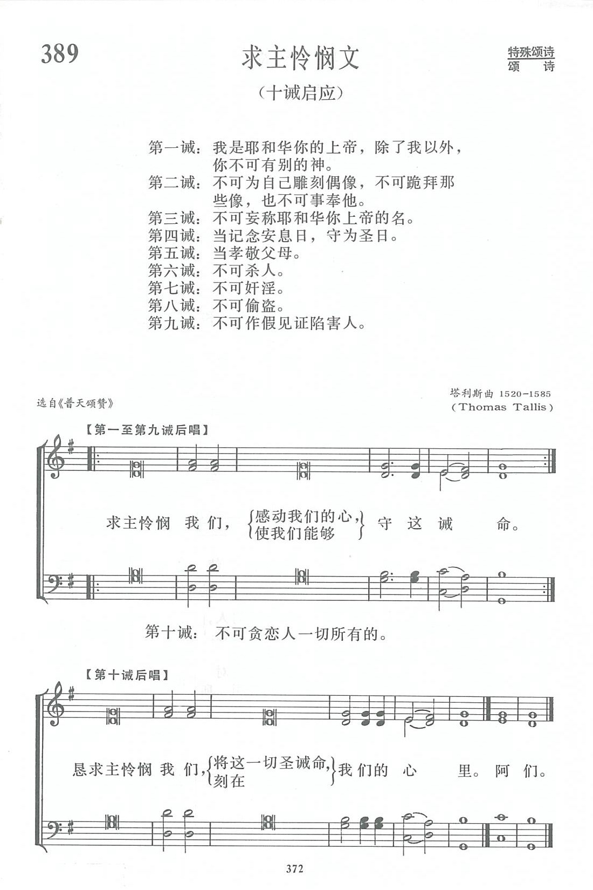

|
|
讚美詩(新編) 第389首《求主憐憫文》 |
|
|
|
|
https://www.zanmeishige.com/tab/14062.html?songbook=1&index=389
 |
|
|
|
|

第389首 求主怜悯文 KYRIE ELEISON _T．Tallis
经文：“耶和华啊，求你怜悯我们，怜悯我们”(诗123：3)。
这首《求主怜悯文》《新编》有个副题为《十诫启应》。
按一启一应的唱法或读法由来已久，早在以色列人出埃及，
在红海边举行欢乐的大庆时，不但男人唱，妇女也唱，而且轮唱(详见出埃及记第l 5章)；以后又有底波拉之歌(士师记第5章)，是由男女分班轮流应对地互唱；
到了会幕圣殿时期，又有了新的发展，更有组织地启应轮唱，有时各组唱诗班互相应和，有时主礼者和信徒群众或唱诗班群众轮流唱和。
《求主怜悯文》乃根据圣经上所载：
“耶和华啊，求你施恩于我们”(赛33：2)，
“耶和华啊，求你怜悯我们，怜悯我们”(诗123：3)
和耶稣所讲的两个人上殿祷告的比喻(路18：13)，那税吏远远地站着，连举目望天也不敢，只捶着胸说“上帝啊!开恩可怜我这个罪人!”于是中古时期教会在设圣餐开始时，神甫领着信众低头、捶胸，连呼三次“求主怜悯我们”。
这本是东方希腊教会的习惯，所以拉丁文一直沿用希腊语，称此为启应句Kyrie Eleison 。以后拉丁教会甚至发展到连呼九次之多。
英国圣公会在编译英文公祷书时，规定在施行圣餐时，先念《求洁心祷文》，接着，牧师向众宣读十诫，每诫读毕，会众祈求上帝施恩，赦免已往之罪，并求赐恩，使祈祷者以后皆能遵行，也就是《新编》第389首。当牧师宣读第十诫之后，会众应(或唱或读)：
恳求主怜悯我，将这一切圣诫命，刻在我们心里。
这样的安排确实是比单纯呼喊“求主怜悯我们”有意义得多。
最后一句，更使我们联想到希伯来书上引用先知耶利米的话说：“主说：‘日子将到，我要与以色列家和犹大家另立新约……我要将我的律法放在他们里面，写在他们心上’”(来8：8一l2；参耶31：31一33)。
曲谱作者塔利斯(T．Tallis，1510一1585)，乃英国早期作曲家。他的作品以对位技巧及和声丰富著称，几乎可与帕勒斯特里那(事略参阅第1O5首)齐名。他1540年任英国皇家教堂管风琴师，一生谱过许多教会音乐，曾写过一首分4O部分的合唱曲。他在世时曾被人称为“英国教会音乐之父”。
Thomas Tallis › Tunes

www.hymntime.com/tch
| Short Name: | Thomas Tallis |
| Full Name: | Tallis, Thomas, ca. 1505-1585 |
| Birth Year: | 1505 |
| Death Year: | 1585 |
Thomas Tallis (b. Leicestershire [?], England, c. 1505; d. Greenwich, Kent, England 1585) was one of the few Tudor musicians who served during the reigns of Henry VIII: Edward VI, Mary, and Elizabeth I and managed to remain in the good favor of both Catholic and Protestant monarchs. He was court organist and composer from 1543 until his death, composing music for Roman Catholic masses and Anglican liturgies (depending on the monarch). With William Byrd, Tallis also enjoyed a long-term monopoly on music printing. Prior to his court connections Tallis had served at Waltham Abbey and Canterbury Cathedral. He composed mostly church music, including Latin motets, English anthems, settings of the liturgy, magnificats, and two sets of lamentations. His most extensive contrapuntal work was the choral composition, "Spem in alium," a work in forty parts for eight five-voice choirs. He also provided nine modal psalm tunes for Matthew Parker's Psalter (c. 1561).
https://hymnary.org/person/Tallis_T?tab=tunes
Kyrie eleison (Thomas Tallis)
https://www.cpdl.org/wiki/index.php/Kyrie_eleison_(Thomas_Tallis)